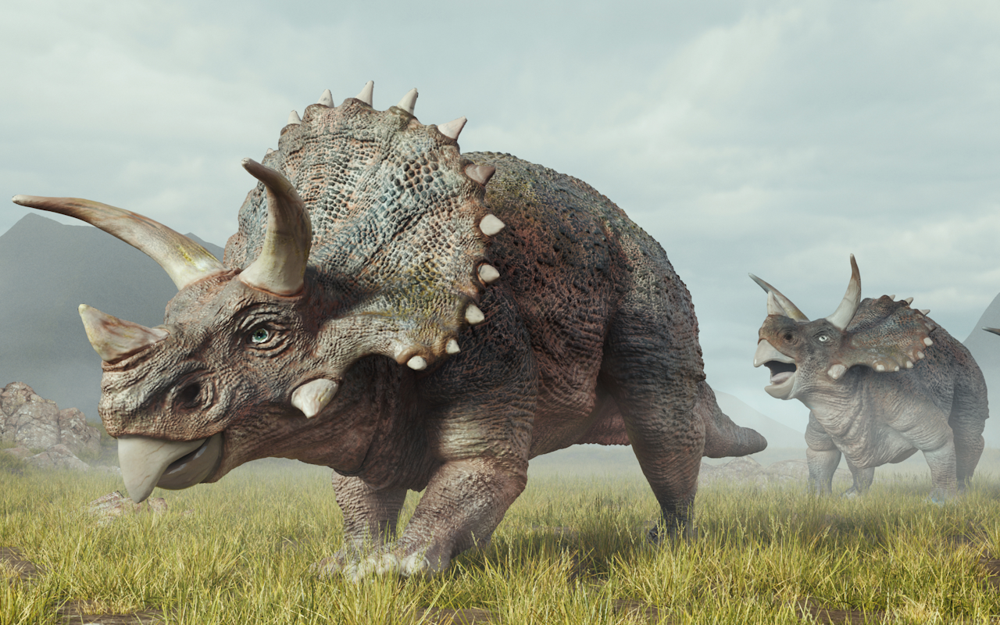
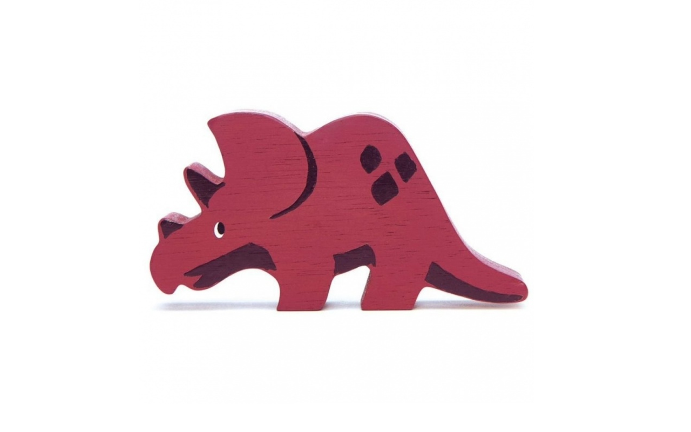

Triceratops



Triceratops (/traɪˈsɛrətɒps/ try-SERR-ə-tops;[1] lit. 'three-horned face') is a genus of chasmosaurine ceratopsian dinosaur that lived during the late Maastrichtian age of the Late Cretaceous period, about 68 to 66 million years ago in what is now western North America. It was one of the last-known non-avian dinosaurs and lived until the Cretaceous–Paleogene extinction event 66 million years ago. The name Triceratops, which literally means 'three-horned face', is derived from the Greek words trí- (τρί-) meaning 'three', kéras (κέρας) meaning 'horn', and ṓps (ὤψ) meaning 'face'.